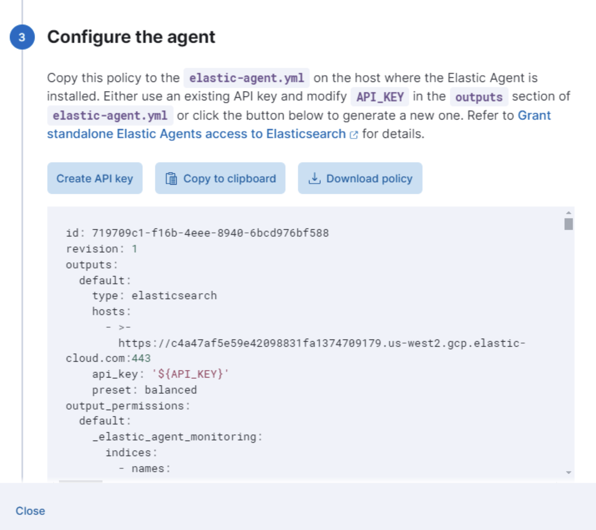

Create a standalone Elastic Agent policyedit
Running Elastic Agent in standalone mode is an advanced use case. The documentation is incomplete and not yet mature. When possible, we recommend using Fleet-managed agents instead of standalone mode.
To get started quickly, use Kibana to add integrations to an agent policy, then download the policy to use as a starting point for your standalone Elastic Agent policy. This approach saves time, is less error prone, and populates the policy with a lot of details that are tedious to add manually. Also, adding integrations in Kibana loads required assets, such as index templates, and ingest pipelines, before you start your Elastic Agents.
If you’re a Fleet user and already have an agent policy you want to use in standalone mode, go to Fleet > Agents and click Add agent. Follow the steps under Run standalone to download the policy file.
You don’t need Fleet to perform the following steps, but on self-managed
clusters, API keys must be enabled in the Elasticsearch configuration (set
xpack.security.authc.api_key.enabled: true).
- From the main menu in Kibana, click Add integrations, and search for the Elastic Agent integration you want to use. Read the description to make sure the integration works with Elastic Agent.
-
Click the integration to see more details about it, then click Add <Integration>.

If you’re adding your first integration and no Elastic Agents are installed, Kibana may display a page that walks you through configuring the integration and installing Elastic Agent. If you see this page, click Install Elastic Agent, then click the standalone mode link. Follow the in-product instructions instead of the steps described here.
- Under Configure integration, enter a name and description for the integration.
- Click the down arrow next to enabled streams and make sure the settings are correct for your host.
- Under Apply to agent policy, select an existing policy, or click Create agent policy and create a new one.
-
When you’re done, save and continue.
A popup window gives you the option to add Elastic Agent to your hosts.

- (Optional) To add more integrations to the agent policy, click Add Elastic Agent later and go back to the Integrations page. Repeat the previous steps for each integration.
- When you’re done adding integrations, in the popup window, click Add Elastic Agent to your hosts to open the Add agent flyout.
- Click Run standalone and follow the in-product instructions to download Elastic Agent (if you haven’t already).
-
Click Download Policy to download the policy file.

The downloaded policy already contains a default Elasticsearch address and port for your setup. You may need to change them if you use a proxy or load balancer. Modify the policy, as required, making sure that you provide credentials for connecting to Elasticsearch
If you need to add integrations to the policy after deploying it, you’ll need to run through these steps again and re-deploy the updated policy to the host where Elastic Agent is running.
For detailed information about starting the agent, including the permissions needed for the Elasticsearch user, refer to Install standalone Elastic Agents (advanced users).
Upgrade standalone agent policies after upgrading an integrationedit
Because standalone agents are not managed by Fleet, they are unable to upgrade to new integration package versions automatically. When you upgrade an integration in Kibana (or it gets upgraded automatically), you’ll need to update the standalone policy to use new features and capabilities.
You’ll also need to update the standalone policy if you want to add new integrations.
To update your standalone policy, use the same steps you used to create and download the original policy file:
- Follow the steps under Create a standalone Elastic Agent policy to create and download a new policy, then compare the new policy file to the old one.
- Either use the new policy and apply your customizations to it, or update your old policy to include changes, such as field changes, added by the upgrade.
Make sure you update the standalone agent policy in the directory where Elastic Agent is running, not the directory where you downloaded the installation package. Refer to Installation layout for the location of installed Elastic Agent files.